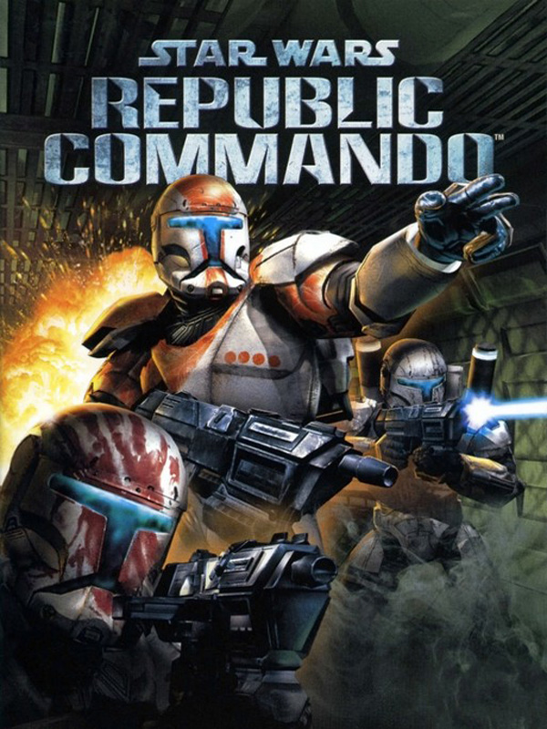

STAR WARS Republic Commando
STAR WARS Republic Commando
Details
|  | |
| Playtime | Not Played |
| Last Activity | Never |
| Added | 16/09/2024 23:34:20 |
| Modified | 17/05/2025 23:35:08 |
| Completion Status | Not Played |
| Library | Amazon Games |
| Source | Amazon |
| Platform | PC (Windows) |
| Release Date | 17/02/2005 |
| Community Score | 82 |
| Critic Score | 81 |
| User Score | |
| Genre | Adventure Shooter Tactical |
| Developer | LucasArts |
| Publisher | Activision Aspyr Media Electronic Arts LucasArts |
| Feature | Multiplayer Single Player |
| Links | Wikipedia Steam GOG Official YouTube Wikia Twitch |
| Tag | Action Adventure Atmospheric Classic Co-op Dark Epic First-Person FPS Futuristic Great Soundtrack Multiplayer Sci-fi Shooter Singleplayer Space Strategy Tactical Team-Based War |
Description
Chaos has erupted throughout the galaxy. As a leader of an elite squad of Republic Commandos, your mission is to infiltrate, dominate, and ultimately, annihalate the enemy. Your squad will follow your orders and your lead, working together as a team-instinctively, intelligently, instantly. You are their leader. They are your weapon.
Star Wars: Republic Commando is a tactical first-person shooter video game, set in the Star Wars universe. It was developed by LucasArts using the Unreal Engine, and published for the Xbox and Microsoft Windows in 2005. The game features both single-player and multiplayer game modes. In the story, set in the Star Wars Legends expanded universe, players assume the role of RC-1138 ("Boss"), an elite clone trooper, known as "clone commando", and the leader of the special ops unit Delta Squad, consisting of three fellow clone commandos with distinctive personalities and character traits: RC-1262 ("Scorch"), RC-1140 ("Fixer"), and RC-1207 ("Sev"). The story follows Delta Squad as they complete increasingly difficult missions throughout the Clone Wars and learn to bond as a team.
Republic Commando received generally favorable reviews at release. Many critics praised the story and combat, but criticized the short length and average multiplayer. In the years since its release, it has come to be considered one of the best Star Wars games ever made, and has gained a cult following.
An enhanced port of the game by Aspyr is set to release for the Nintendo Switch and PlayStation 4 on April 6, 2021. As reported by Jordan Ramée of GameSpot, "Handled by Aspyr Media, Star Wars: Republic Commando Remastered brings the original 2005 Xbox and PC game to PS4 and Switch with enhanced HD graphics and modernized controls, though the multiplayer is absent. Otherwise, it's the same game. And though the flaws in its gameplay are only more noticeable now 16 years later, this remaster manages to still deliver a compelling story of four specialized commandos engaging in a variety of combat missions across the Clone Wars.".
Star Wars: Republic Commando is a tactical first-person shooter video game, set in the Star Wars universe. It was developed by LucasArts using the Unreal Engine, and published for the Xbox and Microsoft Windows in 2005. The game features both single-player and multiplayer game modes. In the story, set in the Star Wars Legends expanded universe, players assume the role of RC-1138 ("Boss"), an elite clone trooper, known as "clone commando", and the leader of the special ops unit Delta Squad, consisting of three fellow clone commandos with distinctive personalities and character traits: RC-1262 ("Scorch"), RC-1140 ("Fixer"), and RC-1207 ("Sev"). The story follows Delta Squad as they complete increasingly difficult missions throughout the Clone Wars and learn to bond as a team.
Republic Commando received generally favorable reviews at release. Many critics praised the story and combat, but criticized the short length and average multiplayer. In the years since its release, it has come to be considered one of the best Star Wars games ever made, and has gained a cult following.
An enhanced port of the game by Aspyr is set to release for the Nintendo Switch and PlayStation 4 on April 6, 2021. As reported by Jordan Ramée of GameSpot, "Handled by Aspyr Media, Star Wars: Republic Commando Remastered brings the original 2005 Xbox and PC game to PS4 and Switch with enhanced HD graphics and modernized controls, though the multiplayer is absent. Otherwise, it's the same game. And though the flaws in its gameplay are only more noticeable now 16 years later, this remaster manages to still deliver a compelling story of four specialized commandos engaging in a variety of combat missions across the Clone Wars.".